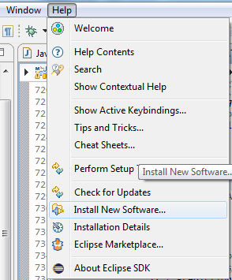
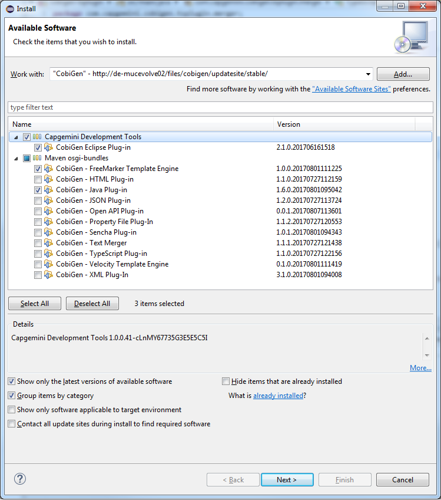
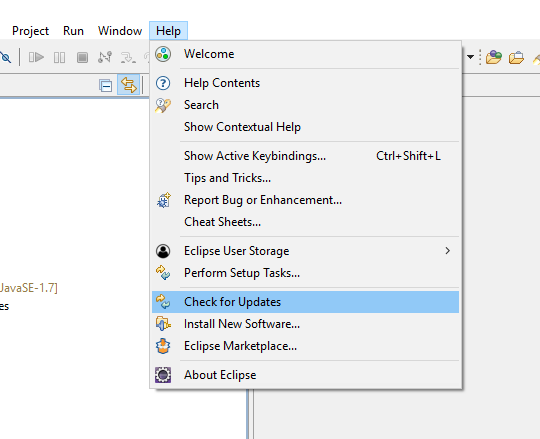

Installation
Remark: CobiGen is preinstalled in the devonfw/devon-ide.
Preconditions
-
Eclipse 4.x
-
Java 7 Runtime (for starting eclipse with CobiGen). This is independent from the target version of your developed code.
Installation steps
-
Open the eclipse installation dialog
menu bar → Help → Install new Software…
-
Open CobiGen’s update site
Insert the update site of your interest into the filed Work with and press Add …-
Stable releases: https://devonfw.com/cobigen/updatesite/stable/

-
-
Follow the installation wizard
Select CobiGen Eclipse Plug-in → Next → Next → accept the license → Finish → OK → Yes -
Once installed, a new menu entry named "CobiGen" will show up in the Package Explorer’s context menu. In the sub menu there will the Generate… command, which may ask you to update the templates, and then you can start the generation wizard of CobiGen. You can adapt the templates by clicking on Adapt Templates which will give you the possibility to import the CobiGen_Templates automatically so that you can modified them.
-
Checkout (clone) your project’s templates folder or use the current templates released with CobiGen (https://github.com/devonfw/cobigen/tree/master/cobigen-templates) and then choose Import -> General -> Existing Projects into Workspace to import the templates into your workspace.
-
Now you can start generating. To get an introduction of CobiGen try the devon4j templates and work on the devon4j sample application. There you might want to start with Entity objects as a selection to run CobiGen with, which will give you a good overview of what CobiGen can be used for right out of the box in devon4j based development. If you need some more introduction in how to come up with your templates and increments, please be referred to the documentation of the context configuration and the templates configuration
Dependent on your context configuration menu entry Generate… may be greyed out or not. See for more information about valid selections for generation.
Updating
In general updating CobiGen for eclipse is done via the update mechanism of eclipse directly, as shown on image below:

Upgrading eclipse CobiGen plug-in to v3.0.0 needs some more attention of the user due to a changed plug-in architecture of CobiGen’s core module and the eclipse integration. Eventually, we were able to provide any plug-in of CobiGen separately as its own eclipse bundle (fragment), which is automatically discovered by the main CobiGen Eclipse plug-in after installation.